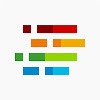

Nubenetes: Awesome Kubernetes & Cloud 
A curated list of awesome references collected since 2018. Microservices architectures rely on DevOps practices, automation, CI/CD (Continuous Integration & Delivery), and API-focused designs.
Nubenetes is also available at this other site.
“I do not believe you can do today’s job with yesterday’s methods and be in business tomorrow” (Horatio Nelson Jackson)
Motivation
- microservices.io
- cncf.io
- State of DevOps Reports
- CRI-O Lightweight Container Runtime for Kubernetes
- Open Container Initiative
- agilemethodology.org
- agilemanifesto.org
- 12factor.net - Are You 12-Factor Application Ready? - 12-factor app infographic - An illustrated guide to 12 Factor Apps
- openpracticelibrary.com - Top 10 most visited pages
- roadmap.sh - DevOps Roadmap
- API Landscape
- Stack Overflow Annual Developer Survey - 2021
- Stack Overflow Collectives Communities for your favorite technologies
- repost.aws
- Open Source Guides
- The Open Group: Making Standards Work - publications.opengroup.org - The TOGAF Standard, a standard of The Open Group
- How Your Application Architecture Has Evolved
- Kubernetes magic is in enterprise standardization, not app portability
- A new role to emerge: Kubernetes Manager
- Google DORA Report: State of DevOps 2021 How to accelerate DevOps - summary 1 - summary 2
- Top GitHub Users By Country
- Red Hat automation glossary
- The rise of the automation architect
- Automation is the future of cloud cost optimization
- The Rise of Modern Day Kubernetes Operations
- The Evolution of Distributed Systems on Kubernetes
- 10 Cloud Deficiencies You Should Know
- How to Explain Kubernetes to a Business Team
- Pets vs. Cattle: The Future of Kubernetes in 2022
- dok.community: Data on Kubernetes 2021
- A Kubernetes Documentary Shares Googles Open Source Story
Introduction
- Microservice Architecture. From Java EE To Cloud Native. Openshift VS Kubernetes
- Microservices FAQ & Kubernetes Native
SRE Site Reliability Engineering
DevOps
Security and DevSecOps. Container Security
NoOps
Docker
Kubernetes
- Kubernetes
- Kubernetes Tutorials
- Kubernetes Plugins, Tools, Extensions and Projects
- kubectl Commands
- Kubernetes Networking
- Kubernetes Monitoring and Logging
- Kubernetes Security
- Kubernetes Storage
- Kubernetes Backup and Migrations
- Kubernetes Autoscaling
- Kubernetes Operators and Controllers
- Kubernetes Based Development
- Kubernetes On Premise
- Managed kubernetes in public clouds
- Kubernetes Troubleshooting
- Kubernetes Releases
- Kubernetes Matrix Table
- Kubernetes Alternatives
Red Hat OpenShift
SUSE Rancher
Software Delivery Pipeline
- CI/CD - Continuous Integration & Continuous Delivery
- Git & Git Patterns. Trunk Devel, Git Flow & Feature Flags. Merge BOTs
Jenkins & CloudBees
OpenShift Pipelines
Jenkins Alternatives
Toolchain
- Container Runtimes/Managers & Base Images. Podman, Buildah & Skopeo
- Maven, Gradle & SDKMAN
- SonarQube
- Docker Registries. Quay, Nexus, JFrog Artifactory, Harbor and more
- Linux & SSH
- MkDocs & GitHub Pages
Web Servers, Reverse Proxies, Java Runtimes & Caching Solutions
- Web Servers & Reverse Proxies: Apache, Nginx, HAProxy, Traefik and more
- Java EE/Jakarta EE and MicroProfile Runtimes: Payara, JBoss EAP, WebSphere Liberty, WildFly and more
- Embedded Servlet Containers in SpringBoot: Jetty, Tomcat, Undertow and more
- Caching Solutions
Monitoring and Performance. Prometheus, Grafana, APMs and more
Infrastructure Provisioning. Infra Management Tools
- IaC Infrastructure as Code
- Terraform & Packer.Kubernetes Boilerplates
- Pulumi
- Crossplane A Kubernetes Control Plane to Roll Your Own PaaS
- Cloud Asset Inventory
Configuration Management
- Ansible
- Argo CD - Declarative GitOps for Kubernetes
- Flux - The GitOps Operator for Kubernetes
- Helm Kubernetes Tool
- Kustomize - Template-Free Kubernetes Configuration Customization
- StackStorm
- Chef
- CI/CD Kubernetes Plugins
- Client Libraries for Kubernetes: Go client, Python, Fabric8, JKube & Java Operator SDK
- Database Version Control. Liquibase, Flyway and PlanetScale
- redhat-cop: Openshift Applier
- YAML and JSON
Databases on Kubernetes
Cloud Based Integration & Messaging. Data Processing & Streaming (aka Data Pipeline)
Service Mesh
Demos and Boilerplates
- Demos, Boilerplates & Screencasts OpenShift, Kubernetes, Jenkins Pipelines with JCasC and more
Public Cloud
- Public Cloud Solutions
- Big Data
- Edge Computing
- Cloud Architecture Diagram Tools
- AWS
- Google Cloud Platform
- Microsoft Azure
- IBM & IBM Cloud
- Oracle Cloud
- Digital Ocean
- Cloudflare
- Scaleway
APIs with SOAP, REST and gRPC
- APIs with SOAP, REST and gRPC
- Swagger code generator for REST APIs
- API Test Automation with Postman
- API Marketplaces. API Management with API Gateways & Developer Portals
Development & Frameworks
- Websites for web developers
- Angular
- Document Object Model (DOM)
- Go
- JavaScript - node.js & npm
- Python - Django & Flask
- Low Code and No Code
- Web3
Microsoft
Java
- Java & Open Source Microservices Frameworks. SpringBoot, MicroProfile, Quarkus and more
- Java Memory Management & Java Performance Optimization
- Java Parameters Matrix Table
Dev Environment
- Visual Studio Code
- WSL: Linux Dev Environment on Windows
- Scaffolding Tools
- Chrome & Firefox DevTools. HTTP Protocols & WebSockets
QA/TestOps - Continuous Testing
- QA
- TestOps and Continuous Testing
- Test Automation Frameworks and Behavior Driven Development. Selenium, Cypress, Cucumber, Appium and more
Project Management Methodology
More References
Recruitment and Freelancing
Customer Success Stories
